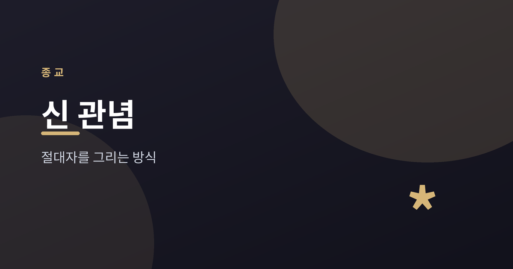
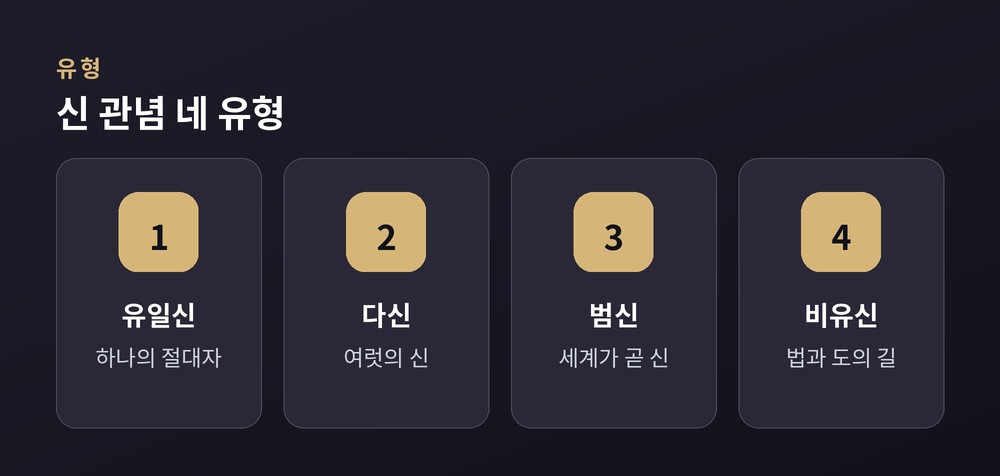
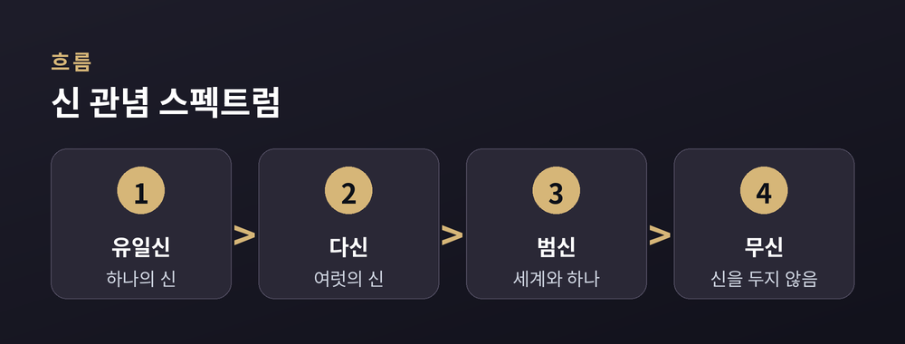

유일신·다신·범신, 절대자를 그리는 방식들

이번 글에서는 세계 여러 종교가 '절대자'를 어떻게 그려 왔는지 정리해 보겠습니다. 어느 쪽이 옳고 그른지를 가리는 글은 아닙니다. 비교종교학의 시선으로, 서로 다른 관념을 나란히 살펴보려 합니다.
같은 '신'이라는 말을 쓰더라도, 그 안에 담긴 그림은 전통마다 다릅니다. 하나로 모으는 전통이 있고, 여럿으로 펼치는 전통이 있습니다. 세계 자체를 신으로 보는 시선도 있고, 아예 '신'이라는 말을 앞세우지 않는 길도 있습니다.
먼저 큰 지도를 그려 두고, 하나씩 짚어 가겠습니다.
유일신론은 오직 하나의 신만을 인정하는 관점입니다. 유대교, 기독교, 이슬람이 대표적입니다. 세 전통은 뿌리를 공유하지만, 신을 부르는 이름과 이해는 조금씩 다릅니다.
유대교는 야훼를 세계의 창조자이자 계약의 상대로 봅니다. 기독교는 같은 하나님을 믿되, 성부·성자·성령이 한 신 안에 있다는 삼위일체 관점을 함께 이야기합니다. 이슬람은 알라의 절대적 유일성을 강조하며, 신을 나누어 보는 해석과는 분명히 거리를 둡니다.
세 전통 모두 신을 세계 바깥에서 세계를 만든 초월적 존재로 그립니다. 인격을 지니고 인간에게 말을 건다는 이해가 공통적입니다. 다만 그 하나를 어떻게 설명하느냐에서 관점이 갈립니다.

다신론은 여러 신이 함께 존재한다고 보는 관점입니다. 고대 그리스와 로마가 잘 알려져 있습니다. 하늘, 바다, 전쟁, 사랑처럼 세계의 여러 영역에 저마다의 신을 두었습니다.
힌두교도 수많은 신을 이야기합니다. 다만 그 안에는 다른 결이 함께 흐릅니다. 여러 신을 인정하면서도, 그 모두를 관통하는 브라만이라는 궁극의 실재를 상정하는 관점이 있습니다. 이 경우 여러 신은 하나의 실재가 드러나는 여러 모습으로 이해되기도 합니다.
그래서 다신론을 '신이 많다'는 말로만 읽으면 절반만 본 셈입니다. 어떤 전통에서는 다수의 신 뒤에 더 깊은 하나를 놓기 때문입니다.
범신론은 신과 세계를 하나로 보는 관점입니다. 신이 세계 바깥에 따로 있는 것이 아니라, 세계 그 자체가 곧 신이라는 이해입니다. 근대 철학자 스피노자의 사유가 자주 이 자리에서 언급됩니다.
만유내재신론은 조금 다른 결입니다. 신이 세계 안에 깃들어 있으면서도, 세계를 넘어서는 면도 함께 지닌다고 봅니다. 세계 안에 있으나 세계에 갇히지는 않는다는 관점입니다.
힌두교의 '브라만-아트만' 사유도 이 흐름과 맞닿습니다. 내 안의 참된 자아인 아트만이 궁극의 실재인 브라만과 다르지 않다는 관점입니다. 신을 저 멀리 두기보다, 세계와 나 안에서 찾는 시선이라 할 수 있습니다.
모든 전통이 '신'을 중심에 두는 것은 아닙니다. 불교와 유교는 흔히 비유신론적 전통으로 분류됩니다. 창조자로서의 신을 논의의 축으로 삼지 않는다는 뜻입니다.
불교는 세계를 만든 절대자보다 '법(法)'을 이야기합니다. 모든 것이 서로 기대어 생겨나고 사라진다는 이치입니다. 신에게 세계의 기원을 묻기보다, 괴로움이 어떻게 생기고 어떻게 그치는지를 살핍니다.
유교는 '천(天)'과 '도(道)'를 말합니다. 인격을 지닌 신이라기보다, 세계와 인간이 마땅히 따라야 할 질서에 가깝습니다. 신을 숭배하는 자리에, 하늘의 이치와 사람의 도리를 놓은 셈입니다.
근대에 들어 새로운 관점들도 뚜렷해졌습니다. 이신론은 신이 세계를 만들었으나, 그 뒤로는 세계에 개입하지 않는다고 보는 관점입니다. 시계를 만든 뒤 손을 떼는 시계공에 자주 비유됩니다.
무신론은 신의 존재 자체를 인정하지 않는 관점입니다. 세계를 설명하는 데 신이라는 전제가 필요하지 않다고 봅니다. 종교를 떠난 세속적 세계관의 한 축이기도 합니다.
이렇게 보면 신 관념은 하나의 점이 아니라 넓은 스펙트럼입니다. 하나의 신, 여럿의 신, 세계와 하나인 신, 신을 두지 않는 길이 한 줄 위에 늘어서 있습니다.

정리하면 이렇습니다. 인류는 절대자를 저마다 다른 방식으로 그려 왔습니다. 어떤 그림도 다른 그림을 대신하지는 못합니다.
"같은 물음에 다른 답을 그려 온 지도" — 세계의 신 관념은 그렇게 읽을 수 있습니다. 서로 다른 그림을 나란히 놓고 바라볼 때, 우리는 인간이 궁극을 향해 던져 온 오랜 물음에 조금 더 가까이 서게 되지 않을까 합니다.